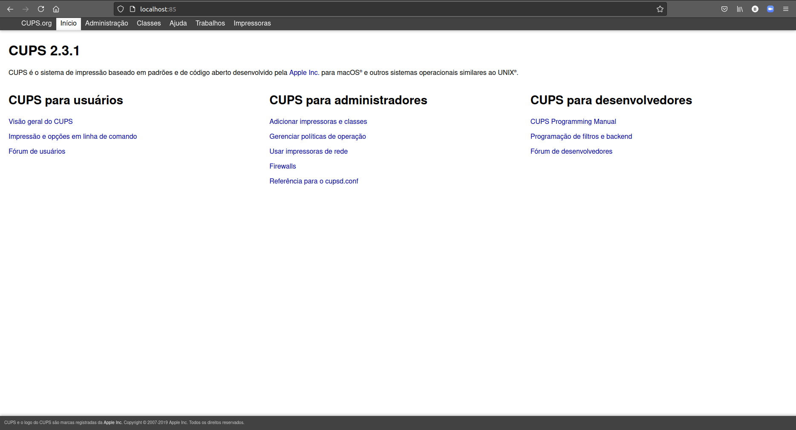
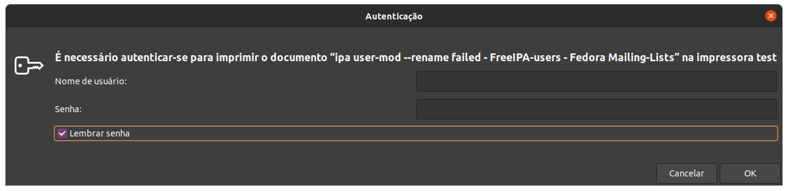
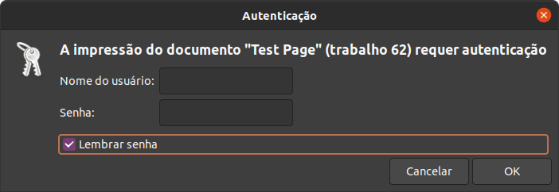

Índice
Índice108.4 Servidor e ImpressãoInstalaçãoGerenciando via terminallpinfolpstatlpqloptionslprmcancelcupsenable e cupsdisablelpcAdicionando uma impressoraEnviando arquivo para a impressoraImplantando um servidor de impressão KerberosDesativando o apparmorFuncionamentoFontes
108.4 Servidor e Impressão
Para podermos ter um servidor de impressão, usamos a aplicação chamada CUPS (Common Unix Printing System), ele é um sistema de gerenciamento de impressão. Como para testar você precisa ter uma impressora, vamos fazer os testes usando uma impressão para PDF.
Instalação
Siga os passos abaixo para instalar as aplicações necessárias.
x# Instalação do servidor de impressão:$ sudo apt install cups cups-bsd# Cups = cliente;# cups-bsd = server.# Instalação do módulo de pdf para o cups:$ sudo apt install cups-pdfO cups roda na porta 631 e para gerenciar por interface gráfica, acesse o IP pelo navegador, informando a porta 631.
Para acessar essa página de outra máquina, faça um redirecionamento usando o ssh:
xxxxxxxxxx$ sudo ssh vagrant@192.168.121.83 -L 85:localhost:631# Pegar a porta 631 do localhost (maquina que vamos acessar) e redirecionamos para a porta 85 da nossa maquina. Então sempre que entrarmos em localhost:85, vamos estar acessando a máquina 192.168.121.83 na porta 631.Isso precisa ser feito porque o servidor cups roda locamente apenas, a página de gerencia não está aberta para a rede, e não é bom abrir, ja que podemos acessar assim.

Gerenciando via terminal
Vamos focar em como gerenciar a impressora via linha de comando, apesar do uso da interface gráfica ser mais fácil, o uso via linha de comando é necessária para a LPI e nem sempre você vai poder contar com uma interface gráfica.
lpinfo
Usado para listar o dispositivos/Drivers de impressão.
| Opção | Descrição |
|---|---|
| -v | Lista todos os dispositivos que o cups está encontrando. |
| -m | Mostra os drivers disponíveis. |
Vamos ver um exemplo:
xxxxxxxxxx# Listando os dispositivos:\# lpinfo -vnetwork behnetwork ippsnetwork ipp14file cups-pdf:/network socketnetwork ippnetwork lpdserial serial:/dev/ttyS0?baud=115200network httpsdirect hpnetwork httpdirect hpfax
lpstat
Usado para retornar o status das impressoras.
xxxxxxxxxx# Verificando o status das impressoras:\# lpstat -aprint1 accepting requests since Ter 15 Jun 2021 15:10:53 -03print2 accepting requests since Qui 09 Fev 2017 16:03:19 -02print3 accepting requests since Sex 15 Mai 2020 18:10:10 -03PDF accepting requests since Qui 28 Jul 2016 12:25:59 -03# Verificando mais detalhes:\# lpstat -tscheduler is runningsystem default destination: PDFdevice for print1: socket://IPdevice for print2: socket://IPdevice for print3: socket://IPdevice for PDF: cups-pdf:/print1 accepting requests since Ter 15 Jun 2021 15:10:53 -03print2 accepting requests since Qui 09 Fev 2017 16:03:19 -02print3 accepting requests since Sex 15 Mai 2020 18:10:10 -03PDF accepting requests since Qui 28 Jul 2016 12:25:59 -03printer print1 is idle. enabled since Ter 15 Jun 2021 15:10:53 -03 Waiting for printer to finish.printer print2 is idle. enabled since Qui 09 Fev 2017 16:03:19 -02printer print3 is idle. enabled since Sex 15 Mai 2020 18:10:10 -03printer PDF is idle. enabled since Qui 28 Jul 2016 12:25:59 -03print1-131430 unknown 356352 Sex 09 Abr 2021 00:00:40 -03# Mostrar jobs na fila de impressão (igual 'lpq'):\# lpstat -oVirtual_PDF_Printer-2 unknown 11264 Thu Jun 17 13:58:17 2021# Para saber a impressora, temos: NOME_da_IMPRESSORA-JOB### Lista as tarefas de impressão completa ou que não foram completadas.### lpstat -W <completed/not-completed> -o# Verificando os jobs que deram certos:\# lpstat -W completed -oVirtual_PDF_Printer-1 unknown 11264 Thu Jun 17 13:49:59 2021# Verificando os jobs que ainda nao deram certo (ou nem irão dar):\# lpstat -W not-completed -oVirtual_PDF_Printer-2 unknown 11264 Thu Jun 17 13:58:17 2021
lpq
Usado para verificar a fila de impressão, para isso, você precisa instalar o pacote cups-bsd.
| Opção | Descrição |
|---|---|
| -a | Lista as filas de todos os dispositivos. |
| -P <impressora> | Mostra a fila de uma impressora. |
| -U <username> | Mostra a fila de um usuário específico. |
xxxxxxxxxx# Verificando a fila para a impressora de PDF:\# lpq -P Virtual_PDF_PrinterVirtual_PDF_Printer is not readyRank Owner Job File(s) Total Size1st unknown 2 unknown 11264 bytes
loptions
Usado para ver e configurar opções de impressora.
| Opção | Descrição |
|---|---|
| -p <impressora> | Mostra os dados da impressora. |
| -l (L minusculo) | Exibe as configurações da impressora. |
| -o opcao=valor | Muda o valor de uma opção para a impressora. |
| -d impressora | Define a impressora como padrão. |
xxxxxxxxxx\# # lpoptions | sed 's/ /\n/g'copies=1device-uri=cups-pdf:/finishings=3job-cancel-after=10800job-hold-until=no-holdjob-priority=50job-sheets=none,nonemarker-change-time=0number-up=1printer-commands=AutoConfigure,Clean,PrintSelfTestPageprinter-info=PDFprinter-is-accepting-jobs=trueprinter-is-shared=falseprinter-locationprinter-make-and-model='Generic CUPS-PDF Printer'printer-state=3printer-state-change-time=1469719559printer-state-reasons=noneprinter-type=10678348printer-uri-supported=ipp://localhost/printers/PDF# Vendo outra impressora:\# lpoptions -p print1 | sed 's/ /\n/g'copies=1device-uri=socket://IPfinishings=3job-cancel-after=10800job-hold-until=no-holdjob-priority=50job-sheets=none,nonemarker-change-time=0number-up=1printer-commands=ReportLevelsprinter-info=print1printer-is-accepting-jobs=trueprinter-is-shared=trueprinter-locationprinter-make-and-model='HP LaserJet Pro MFP M521 Postscript (recommended)'printer-state=3printer-state-change-time=1623783570printer-state-reasons=noneprinter-type=8425556printer-uri-supported=ipp://localhost/printers/print1
lprm
Usado para remover uma impressão da fila de impressão.
Use o -P <impressora_nome> para remover o ultimo item da fila de impressão.
xxxxxxxxxx# Limpando tudo do usuário root (logado no momento):\# lprm -# Removendo o job 1:\# lprm <job-id># Para ver o job, você pode usar 'lpq' ou 'lpstat -o'.
cancel
Usado para cancelar impressões também.
| Opção | Descrição |
|---|---|
| -a | Cancela todas as impressões. |
xxxxxxxxxx# Cancelando o job 35:\# cancel 35# Cancelando tudo:\# cancel -a
cupsenable e cupsdisable
Usado para habilitar e desabilitar uma impressora.
xxxxxxxxxx# Desabilitando a impressora de pdf:\# cupsdisable Virtual_PDF_Printer# Verificando se foi desabilitada:\# lpc statusPDF: printer is on device 'cups-pdf' speed -1 queuing is enabled printing is enabled no entries daemon presentVirtual_PDF_Printer: queuing is enabled printing is disabled no entries daemon present# Perceba que ela está como 'printing is disabled'.
lpc
Usado para verificar status da impressora.
xxxxxxxxxx\# lpc statusPDF: printer is on device 'cups-pdf' speed -1 queuing is enabled printing is enabled no entries daemon presentVirtual_PDF_Printer: queuing is enabled printing is enabled no entries daemon present
Adicionando uma impressora
Antes de adicionarmos um impressora, precisamos saber qual o driver dela. Para gerenciar as impressoras no sistema, usamos o comando lpadmin.
| Opção | Descrição |
|---|---|
| -p <nome> | Especifica um nome para a impressora. |
| -E | Ativa a impressora, aceitando trabalhos da impressora (depois de -p) |
| -v | Informa o URI (Endereço de busca da impressora), podemos obter a impressora com o comando lpinfo -v ou podemos passar uma flag para buscar, por exemplo, para buscar na rede usamos ipp://IP. |
| -m | Informa o modelo/PPD arquivo da impressora (driver). |
| -d <nome> | Define a impressora padrão. |
| -x <impressora> | Remove uma impressora. |
xxxxxxxxxx# Procurando o driver da impressora:$ lpinfo -m | grep -i 5264postscript-hp:0/ppd/hplip/HP/hp-laserjet_flow_mfp_e52645-ps.ppd HP LaserJet Flow MFP E52645 Postscript (recommended)###### Instalando os driver de impressoras HP ####### Caso nao encontre nada, instale o pacote abaixo, ele contém os drivers para impressora HP:$ sudo apt install hplip -y# Agora vamos adicionar a impressora pela rede:$ sudo lpadmin -p NOME -E -v ipp://IP/printers/printer1 -m postscript-hp:0/ppd/hplip/HP/hp-laserjet_flow_mfp_e52645-ps.ppd# Tornando a impressora a padrão:$ sudo lpadmin -d "NOME"
Enviando arquivo para a impressora
Para podermos imprimir, vamos usar o comando lpr.
xxxxxxxxxx# Enviando um arquivo para a impressora padrão:$ lpr <arquivo># Escolhendo a impressora:$ lpr <arquivo> -P <impressora_nome># Uma forma de mandar imprimir também é usando o redirecionamento de saída padrão:$ grep "root" /etc/passwd | lpr# Também podemos fazer isso usando o comando 'lp -d <impressora>'Quando você enviar uma impressão, e ela for impressa, ele ficará em /var/spool/cups/. Arquivos começando com d (arquivos de Dados), são impressões pendentes para serem feitas, e tudo que começar com c (arquivos de controle), são arquivos que já foram impressos.
Os arquivos de controle são normalmente limpos após o 500º trabalho ser enviado, enquanto os arquivos de dados são removidos imediatamente após a impressão bem-sucedida de um trabalho. Ambos os comportamentos podem ser configurados.
Os logs ficam em /var/log/cups/.
Implantando um servidor de impressão
Vou descrever o que você precisa para criar um servidor de impressão para usar em algum lugar.
Edite o arquivo do cups para deixar como abaixo, dessa forma, vamos compartilhar a impressora:
xxxxxxxxxx#### Arquivo está em '/etc/cups/cupsd.conf'# Name of serverServerName nome-do-servidorListen 631Browsing OffDefaultAuthType Basic# Para liberar apenas para alguns IPs, descomente o que estiver comentado dentro de '/' e '/printers'.# O localhost é para que o proprio server possa imprimir.<Location /> Order allow,deny# Order deny,allow# Allow From 127.0.0.1# Allow From 192.168.0.* Allow all</Location>
Kerberos
Para usar a autenticação com Kerberos, use o exemplo abaixo:
xxxxxxxxxx#### Arquivo está em '/etc/cups/cupsd.conf'AccessLogLevel allLogLevel debug2PageLogFormatMaxLogSize 32mListen 631Listen /run/cups/cups.sockBrowsing OffBrowseLocalProtocols dnssdDefaultAuthType NegotiateWebInterface Yes<Location /> AuthType Basic Require valid-user Encryption Required Order deny,allow Allow localhost</Location>#<Location /># Order allow,deny# Allow from 192.168.121./24# AuthType Basic# Require valid-user# Satisfy all#</Location>#<Location /printers># Require valid-user# Encryption Required# Order deny,allow# Allow localhost#</Location><Location /admin/conf> Require valid-user Encryption Required Order deny,allow</Location><Location /admin/log> Require valid-user Encryption Required Order deny,allow</Location><Policy kerberos> JobPrivateAccess default JobPrivateValues default SubscriptionPrivateAccess default SubscriptionPrivateValues default <Limit Create-Job Print-Job Print-URI Validate-Job> Require valid-user Encryption Required Order deny,allow </Limit> <Limit Send-Document Send-URI Hold-Job Release-Job Restart-Job Purge-Jobs Set-Job-Attributes Create-Job-Subscription Renew-Subscription Cancel-Subscription Get-Notifications Reprocess-Job Cancel-Current-Job Suspend-Current-Job Resume-Job Cancel-My-Jobs Close-Job CUPS-Move-Job CUPS-Get-Document> Encryption Required Order deny,allow </Limit> <Limit CUPS-Add-Modify-Printer CUPS-Delete-Printer CUPS-Add-Modify-Class CUPS-Delete-Class CUPS-Set-Default> Require user @SYSTEM Order deny,allow </Limit> <Limit Pause-Printer Resume-Printer Enable-Printer Disable-Printer Pause-Printer-After-Current-Job Hold-New-Jobs Release-Held-New-Jobs Deactivate-Printer Activate-Printer Restart-Printer Shutdown-Printer Startup-Printer Promote-Job Schedule-Job-After Cancel-Jobs CUPS-Accept-Jobs CUPS-Reject-Jobs> Require user @SYSTEM Order deny,allow </Limit> <Limit Cancel-Job CUPS-Authenticate-Job> Require user @OWNER @SYSTEM Order deny,allow </Limit> <Limit All> Order deny,allow </Limit></Policy># No arquivo das impressoras `/etc/cups/printers.conf`, ative o compartilhamento da impressora, e mude a política da impressora:$ sudo vim /etc/cups/printers.conf# Mude 'Share No' para 'Shared Yed' na impressora que for compartilhar:Shared Yes# Mude 'OpPolicy default' para 'OpPolicy kerberos' na impressora que for realizar esse tipo de autenticação:OpPolicy kerberos# Agora vamos reiniciar o serviço do cups:sudo systemctl restart cups# Verifique se o serviço subiu sem problemas:sudo systemctl status cups
Desativando o apparmor
O apparmor vai impedir a comunicação do cups com o sssd, no caso o cliente que comunica com o servidor Kerberos, então temos que tirar o cups do apparmor para que a autenticação via Kerberos funcione.
xxxxxxxxxx# Coloque o link desativando o cups no apparmor:sudo ln -sf /etc/apparmor.d/usr.sbin.cupsd /etc/apparmor.d/disable/sudo ln -sf /etc/apparmor.d/usr.sbin.cups-browsed /etc/apparmor.d/disable/# Carregue a mudança no Kernel:sudo apparmor_parser -R /etc/apparmor.d/disable/usr.sbin.cupsdsudo apparmor_parser -R /etc/apparmor.d/disable/usr.sbin.cups-browsed
Funcionamento
Por algum motivo o sistema vai pedir senha toda vez que for imprimir, existe duas senhas que você deve salvar e mesmo que ele solicite depois, você pode cancelar porque vai estar salva já.
Adicione a impressora no cliente:
xxxxxxxxxx# Adicionando uma impressora no cliente:sudo lpadmin -p "NOME" -v ipp://IP/printers/"Nome da impressora" -E# Ex:sudo lpadmin -p "test" -v ipp://192.168.121.107/printers/PDF -EAgora abra um site qualquer e mande imprimir, vai aparecer uma solicitação como na imagem abaixo, certifique-se de que os usuário e a senha estejam corretos, Não esqueça de marcar a caixa para salva a senha, depois disso, mande imprimir, deve imprirmir sem nenhum problema.

Agora a segunda autenticação é opcional, ela acontece quando você vai enviar uma página de testes, nesse caso não temos uma janela pedindo para colocar a senha, então você deve abrir a fila da impressora, clicar com o botão direito na impressão e ir em Autenticar.

Quando clicar em autenticar, será exibido a janela abaixo.

Agora basta colocar a mesma senha que foi usada mais acima, Não esqueça de marcar a caixa para salva a senha.
Eventualmente será exibido a janela abaixo pedindo para se autentica de novo, essa caixa aparece mais quando você vai imprimir um documento de texto, quando é via browser essa caixa não costuma aparecer tanto, basta cancelar ou fechar, já temos a autenticação salva, a impressão deve ocorrer sem nenhum problema.

Após clicar em cancelar, você poderá imprimir normalmente caso seja um documento e ainda vá escolher a impressora ou a impressão já será enviada caso a aplicação ja tenha escolhido a impressora (nos casos de navegadores por exemplo).
Fontes
https://en.opensuse.org/SDB:CUPS_in_a_Nutshell
https://github.com/ui-kreinhard/go-cups-control-files
https://www.cups.org/doc/man-cupsd.conf.html
https://freeipa-users.redhat.narkive.com/4aE4Z2r8/cups-problem-that-may-be-related-to-freeipa
https://linuxconfig.org/how-to-disable-apparmor-on-ubuntu-20-04-focal-fossa-linux